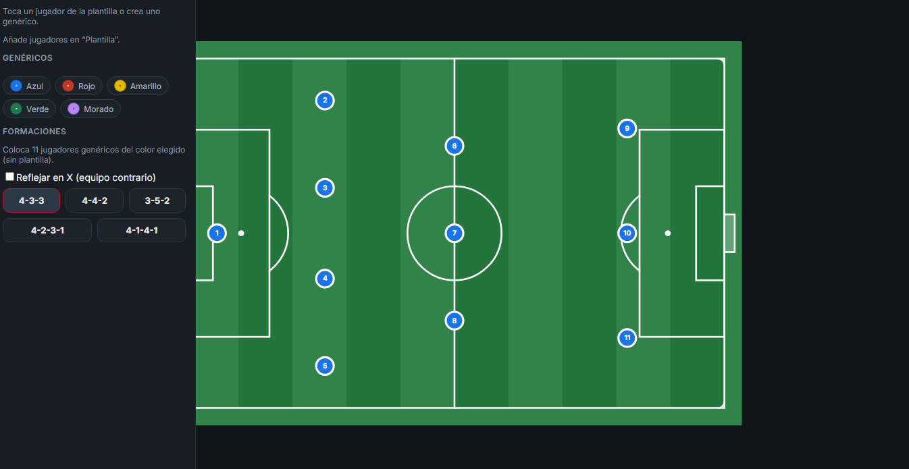
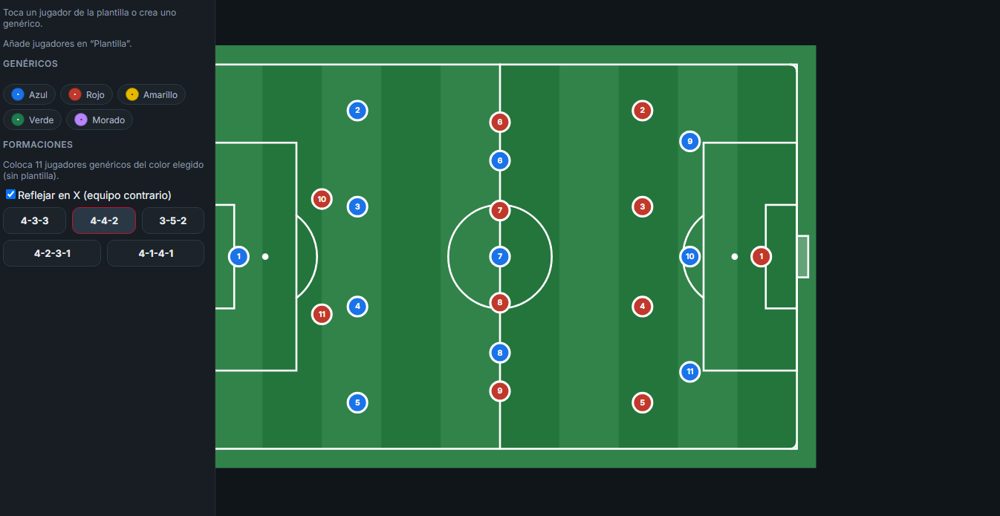
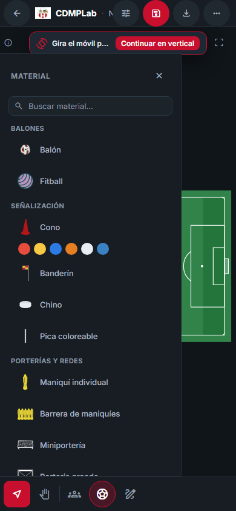
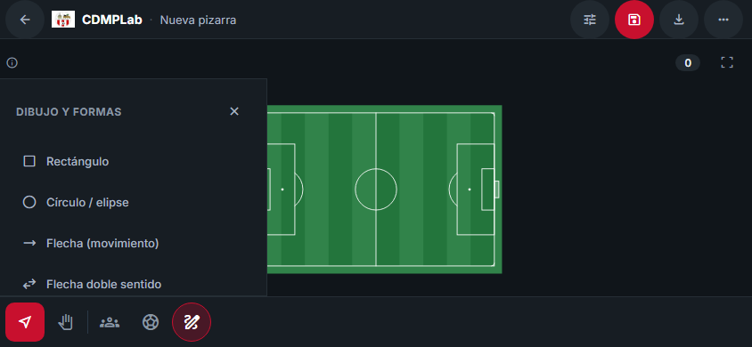
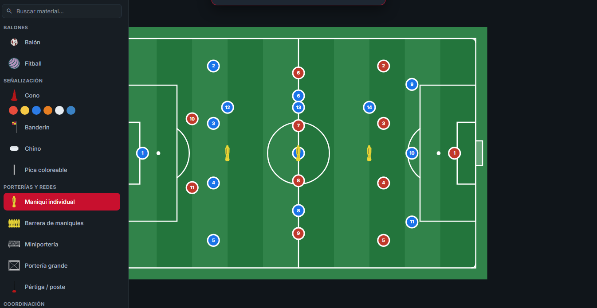
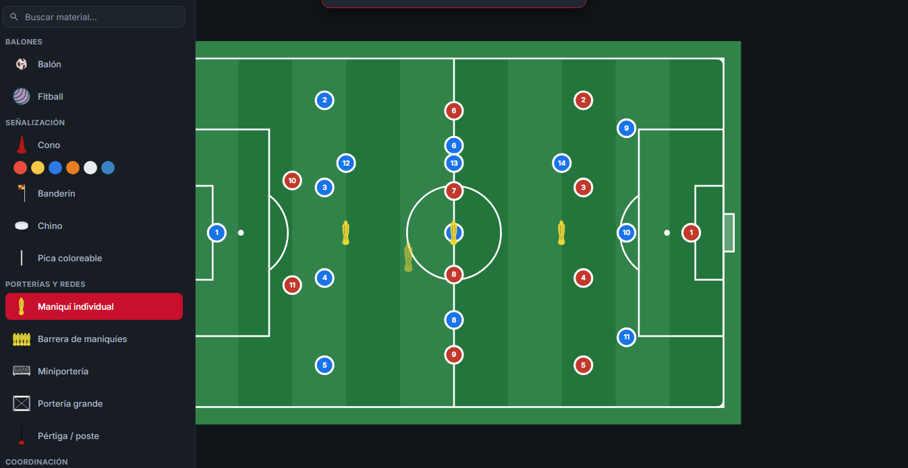
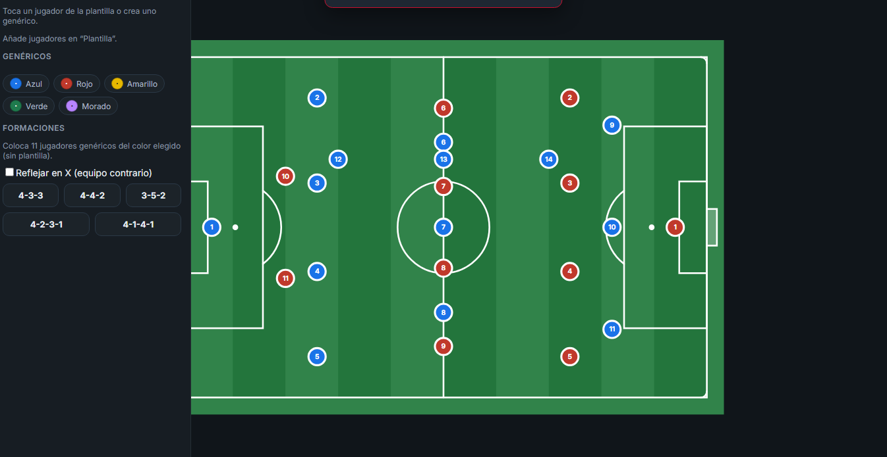
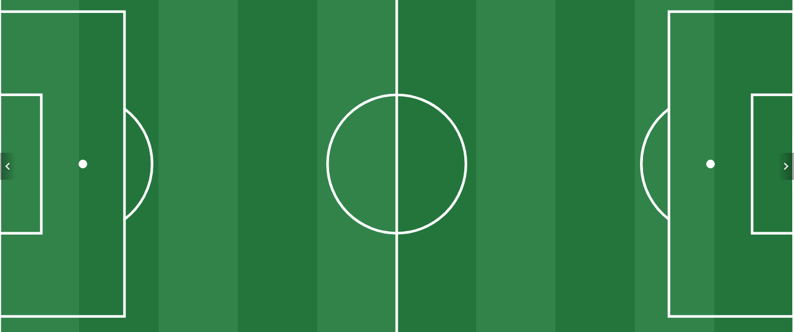
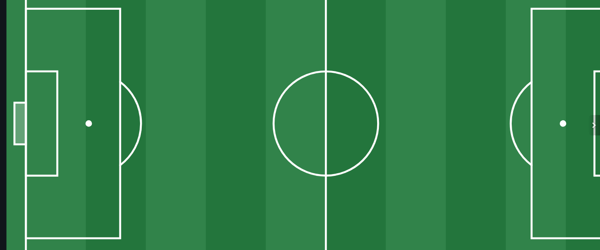
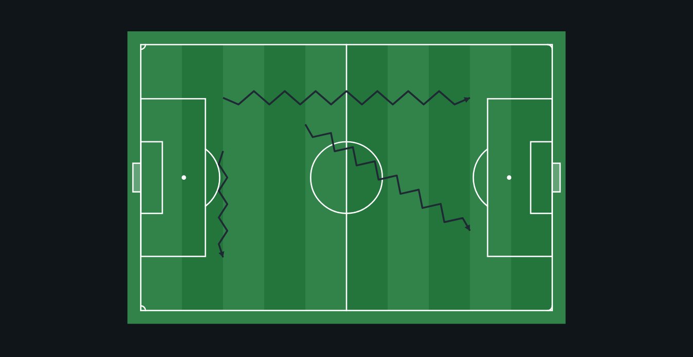

Capturas de la revisión de usabilidad (formaciones sin plantilla, colocación continua,
preview junto al cursor, paneles sin tapar la barra, seleccionar/desplazar y zigzag).

formacion-sin-plantilla-433-propia.png — Formación 4-3-3 propia aplicada con plantilla VACÍA: 11 jugadores genéricos (portero + 10) sin nombres, con el color propio del equipo.

formaciones-genericas-propio-rival.png — Formaciones genéricas propias (4-3-3) y rivales (4-4-2) coexistiendo: 11 propios + 11 rivales, sin nombres.

panel-material-barra-visible-390x844.png — Panel Material en 390×844: termina justo antes de la barra inferior, que permanece visible y operable.

panel-dibujo-barra-visible-844x390.png — Panel Dibujo en 844×390 (paisaje): el panel no invade la barra inferior y las herramientas siguen accesibles.

material-maniqui-colocacion-continua.png — Colocación continua de material: tres maniquíes colocados sin reabrir el panel; la herramienta sigue activa.

preview-material-en-cursor.png — Previsualización del material armado junto al cursor (imagen real del maniquí, ~55 % de opacidad), fuera del documento.

jugadores-genericos-colocacion-continua.png — Colocación continua de jugadores genéricos (propio/rival) sin nombres; la herramienta sigue activa.

seleccionar-no-panea.png — Seleccionar: arrastrar desde zona vacía NO desplaza la vista (panX/panY sin cambios) pese al campo ampliado.

mano-panea-campo.png — Desplazar campo (Mano): arrastrar desde vacío desplaza la vista; el objeto bajo el puntero no se selecciona ni se mueve.

zigzag-compacto-horizontal-vertical-diagonal.png — Zigzag compacto (frecuencia x2, amplitud reducida) en horizontal, vertical y diagonal, con la punta orientada al último tramo.